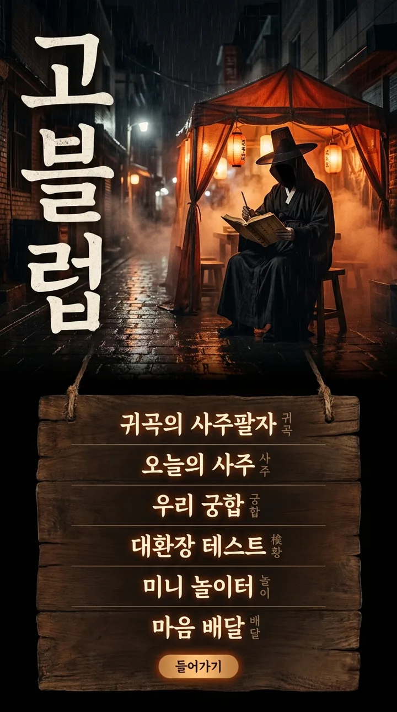
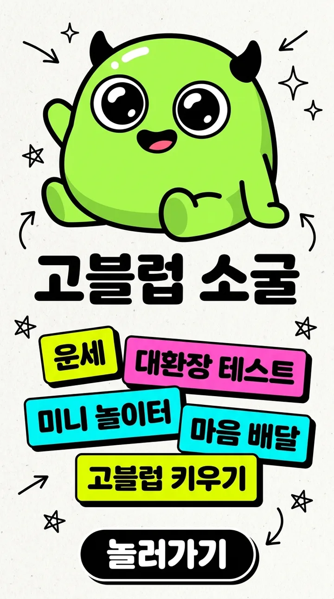
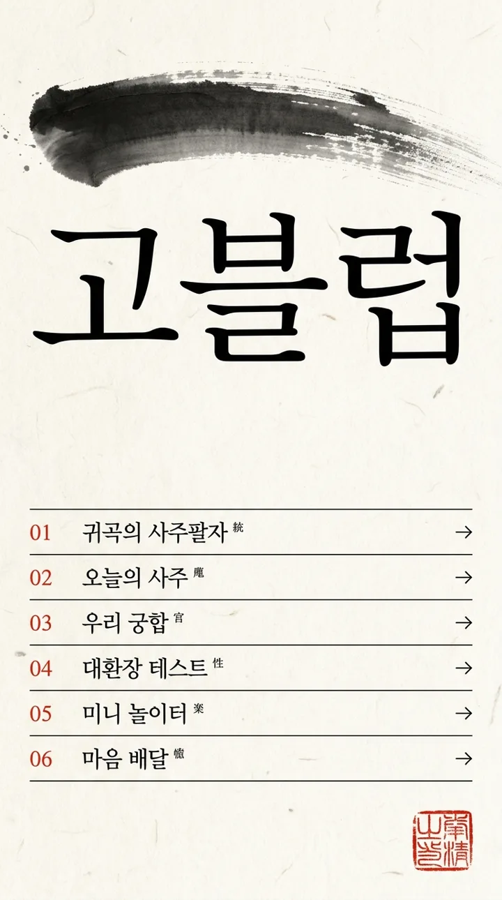
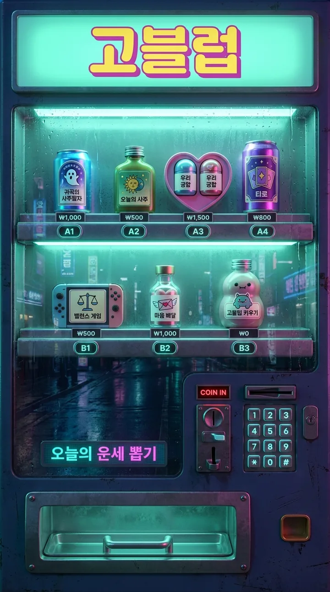
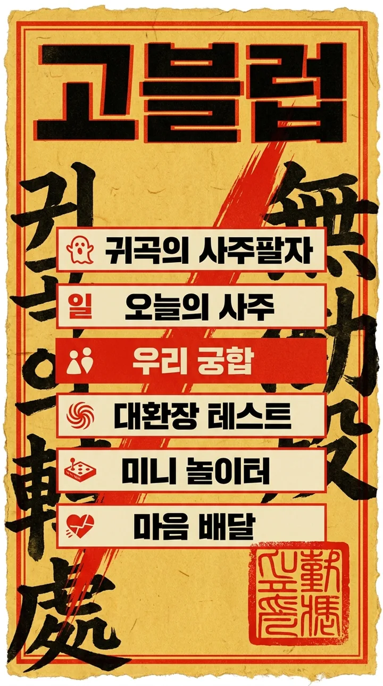

기존 홈(동그란 레트로 태양 + 유리 카드 그리드)을 전제 없이 뒤엎은 다섯 방향입니다. 레이아웃·타이포·컬러·내비게이션이 서로 겹치지 않게 잡았습니다. 눌러서 크게 볼 수 있습니다.

CINEMATIC IMMERSION
귀곡 세계관을 홈부터 밀어붙이는 안. 첫인상이 가장 강하고 프리미엄 라인과 톤이 완전히 붙습니다.

NEO-BRUTALIST
캐릭터 IP를 키울 거면 이 방향. 공유·스크린샷 반응이 제일 좋을 타입입니다.

INK EDITORIAL
가장 조용하고 가장 비싸 보입니다. 유일하게 밝은 배경이라 기존 사이트와 충돌 없이 얹기도 쉽습니다.

VENDING MACHINE
가장 독특하고 젬리(재화) 구조와 은유가 딱 맞습니다. 다만 구현 난이도와 유지비가 5개 중 제일 높습니다.

OCCULT POSTER
이미 만들어 둔 부적 기능과 시각 언어가 그대로 이어집니다. 사진 한 장 없이 강해서 로딩도 제일 가볍습니다.